Intensidad del sonido
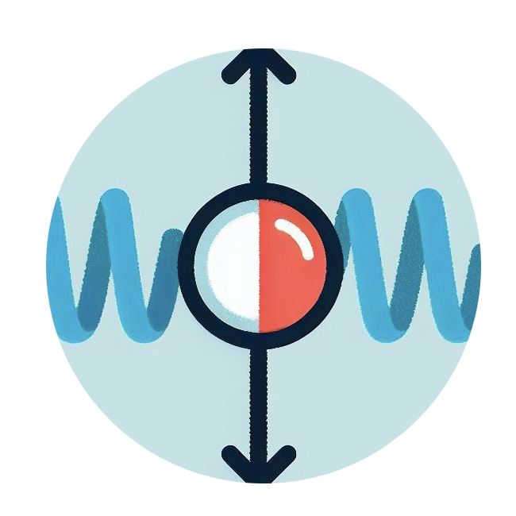
Movimiento armónico simple

Movimiento periódico

Ley de Hooke

(Midebien, 2022, enero 19). Menciona que La intensidad del sonido se define como la potencia acústica transferida por una onda sonora por unidad de área normal a la dirección de propagación.” Se expresa mediante la fórmula I= P/A, donde I es la intensidad de sonido, P es la potencia acústica y A es el área normal a la dirección de propagación. La intensidad del sonido se mide a través de vatios por metro cuadrado (W/m²) en el Sistema Internacional de Unidades (SI). Es por eso que la intensidad del sonido es importante en diversas aplicaciones, como la acústica arquitectónica, a la horade realizar un ultrasonido y en la ingeniería de audio.
(Midebien, 2022, enero 19). La fórmula para poder calcular la intensidad en decibeles es de dB= 10Log10 P1/p2. A continuación, se presentan ejemplos resueltos acerca de la intensidad del sonido
Ejemplo 1: Se tiene una potencia acústica de 50 W y un área de 4 m². Calcular la intensidad del sonido.
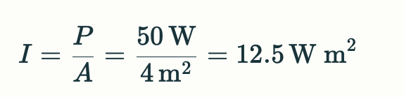Ejemplo 2: Si la potencia acústica es de 20 W y la intensidad del sonido es de 5 W/m², calcular el área.
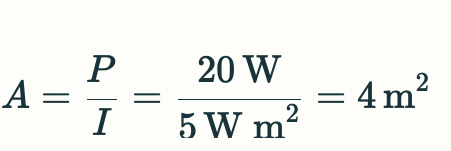Ejemplo 3: Calcular la intensidad del sonido en decibeles si se tiene una potencia de 8 W y otra de 2 W.
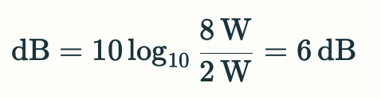Zapata, F. (2021, 5 agosto). El movimiento armónico simple (MAS) constituye una forma de oscilación en la que un objeto se desplaza a lo largo de una trayectoria sinusoidal, adoptando la forma de una onda senoidal. Su rasgo distintivo radica en su regularidad periódica y la carencia de fuerzas de fricción. Este fenómeno es esencial en la física y encuentra diversas aplicaciones prácticas, como en la investigación de sistemas que involucran masa y resortes, péndulos, así como cuerdas en instrumentos musicales, entre otros ejemplos.
La fórmula que describe el movimiento armónico simple es:
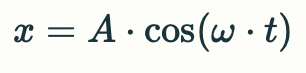donde:
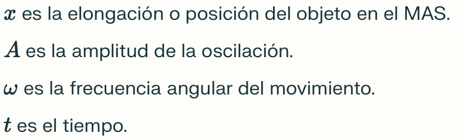ejemplo
Una partícula que se mueve de acuerdo a un movimiento armónico simple tarda 1 s en llegar de un
extramo a otro de su trayectoria a otro. Sabiendo que la distancia que separa ambas posiciones es de
16 cm, y que el movimiento se inicia en un extremo de la trayectoria, determina:
1. El periodo del movimiento
2. La posición de la partícula a los 1.5 segundos
3. La amplitud máxima de las oscilaciones
La partícula tarda 1 segundo en ir de un extremo a otro de la trayectoria, es decir, en hacer media oscilación. La oscilación completa se cumple cuando la partícula vuelve al punto de inicio:
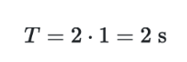Dado que la partícula tarda 2 segundos en completar una oscilación, a los 1.5 segundos se habrán completado los 3/4 de la misma y se encontrará en el punto de equilibrio, de vuelta hacia el punto inicial.
La distancia entre los extremos de un m.a.s. es el doble de la amplitud. Por tanto:
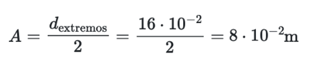(Fernández, J. L. s. f.). El movimiento periódico se define como aquel que se reproduce en intervalos regulares de tiempo, como es evidente en fenómenos como el vaivén de una silla mecedora o el desplazamiento de un péndulo. Este tipo de movimiento se distingue por su regularidad temporal y puede manifestarse en diversas formas, incluyendo movimientos circulares o el movimiento armónico simple.
La fórmula que describe el movimiento armónico simple, un tipo de movimiento periódico, es:
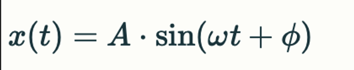donde:
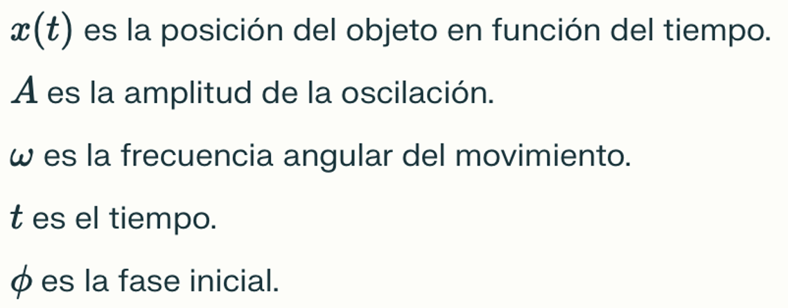
(Fernández, J. L, s. f.). Algunas de las aplicaciones del movimiento periódico en la vida real
incluyen el funcionamiento de péndulos en relojes, el movimiento de las sillas mecedoras y el vaivén
de un péndulo. Este tipo de movimiento es fundamental en el estudio de fenómenos oscilatorios en la
naturaleza y la ingeniería.
ejemplo:
Un resorte se estira 4 cm desde su posición de equilibrio y se suelta. El resorte realiza un
movimiento armónico simple con una frecuencia de 2 Hz.
1. Encuentra la ecuación que describe el movimiento periódico del resorte en función
del tiempo.
2. Determina la posición del resorte en el instante t = 0.5 s.
3. Calcula la velocidad del resorte en ese mismo instante.
(Leskow, E. C, 2021, 15 julio). La Ley de Hooke constituye un principio físico que explica el comportamiento elástico de los sólidos, especialmente en el contexto de los resortes. Esta ley postula que la fuerza aplicada a un resorte es directamente proporcional a la deformación que experimenta, siempre y cuando no se supere el límite elástico del material. En otras palabras, mientras la deformación sea lineal y no se exceda cierto umbral, la fuerza aplicada y la elongación del resorte mantendrán una relación proporcional.
La fórmula de la Ley de Hooke para resortes es:
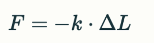donde:
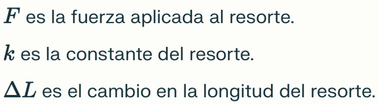
(Leskow, E. C., 2021, 15 julio). La Ley de Hooke encuentra aplicación en diversas situaciones del
mundo real, desempeñando un papel fundamental en numerosos campos. En la fabricación de
dinamómetros, que se emplean para medir fuerzas, esta ley es esencial para garantizar mediciones
precisas y proporcionales. Además, en la construcción de básculas y balanzas, la Ley de Hooke se
utiliza para asegurar una relación lineal entre la carga aplicada y la deflexión del sistema.
ejemplo:
Supongamos que un resorte tiene una constante elástica k = 50 N/m. 1. Si se aplica una fuerza de 10 N sobre el resorte, ¿cuánto se estirará? 2. Si se duplica la fuerza aplicada, ¿cuánto se estirará el resorte? 3. ¿Cuál sería la fuerza necesaria para estirar el resorte 0.1 m?
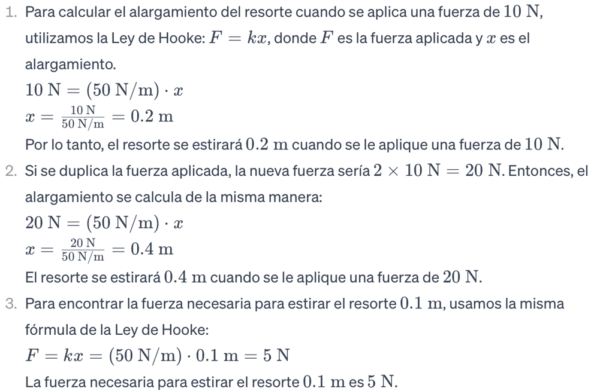(StudySmarter, s. f.). La intensidad de una onda hace referencia a la cantidad de potencia que transporta por unidad de área y se expresa en vatios por metro cuadrado (W/m^2). En el ámbito de las ondas sonoras, la intensidad guarda una conexión directa con la amplitud de movimiento de las partículas en el medio por el cual se propaga el sonido.
La fórmula para la intensidad de una onda es:
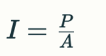donde
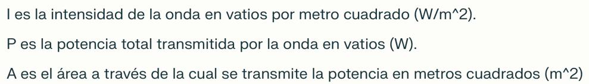
(StudySmarter, s. f.). La utilización de la intensidad de las ondas sonoras abarca múltiples
aplicaciones prácticas en situaciones cotidianas. Este fenómeno juega un papel esencial en la
comunicación verbal diaria, en la creación de imágenes mediante ecografías, en la detección de
imperfecciones en materiales mediante técnicas no destructivas, en la identificación de obstáculos
submarinos y en la medición de la potencia de sistemas de sonido. Además, la intensidad del sonido
desempeña un rol crucial en la evaluación del nivel de presión sonora y su impacto tanto en la salud
humana como en el medio ambiente.
Ejemplo:
Supongamos que tienes una fuente de sonido que emite una potencia de 0.02 W de manera isotrópica (en
todas direcciones por igual). La onda se propaga en el aire y alcanza una superficie esférica
imaginaria con un radio de 4 m alrededor de la fuente.
1. Calcula la intensidad de la onda sonora en la superficie esférica.
2. Si la potencia de la fuente se duplica, ¿cómo afectaría esto a la intensidad en la misma
superficie esférica?